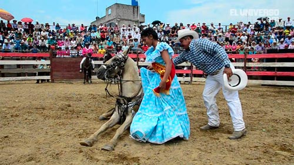
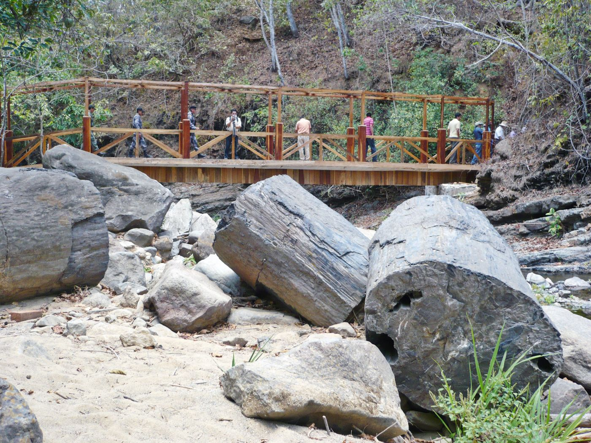
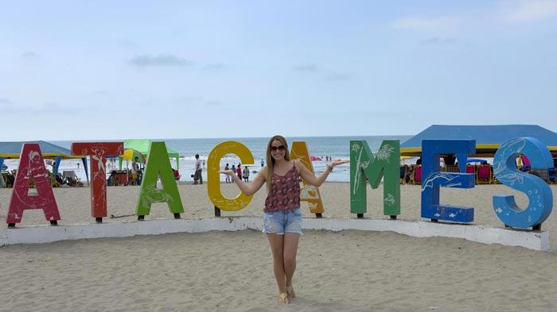
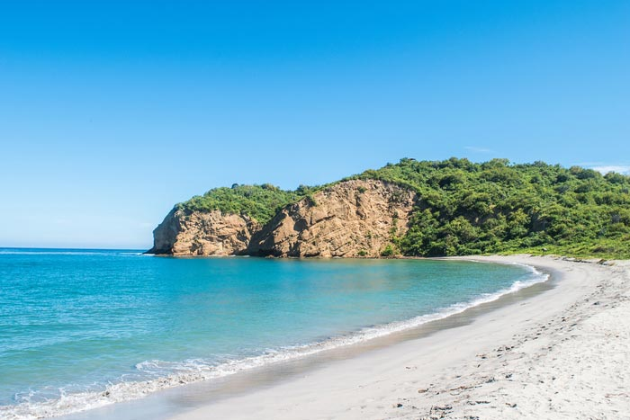
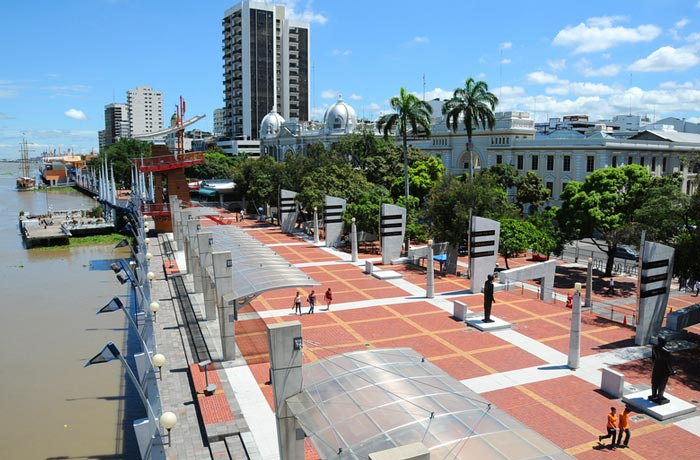

Bañadas por las aguas del Océano Pacífico y con un clima cálido tropical, durante todo el año, la Costa permite a los viajeros vivir emocionantes aventuras. Montañita, es conocida por los fanáticos de los deportes acuáticos, en particular por surfistas y por los amantes de la playa. La Isla de la Plata, Puerto Cayo y Puerto López son destinos ideales para el avistamiento de las ballenas jorobadas, entre junio y octubre llegan al país para vivir la más romántica historia de amor.
En la profundidad del territorio, alejados del mar, se encuentran, por su parte, pintorescos pueblos, ciudades históricas y modernas, conocidas por su gastronomía local, sus artesanías y sus atractivos turísticos. La pujante ciudad de Guayaquil, se levanta como el puerto principal y la capital económica del país. Kilómetros de plantaciones de cacao, bananas, palmeras y arroz, complementan la riqueza de la Costa cuyos atardeceres de dorados interminables estallan caprichosamente.
LUGARES TURISTICOS

Desde las playas cubiertas de palmeras y gigantescos acantilados que se alzan sobre profundas cavernas, hasta los verdes bosques de Mangle o los bosques tropicales secos, los 1600 km (1.000 millas) de playas se tornan interminables en la paradisiaca Costa ecuatoriana. Bañadas por las aguas del Océano Pacífico y cuenta con un clima cálido tropical, durante todo el año, la Costa permite a los viajeros vivir emocionantes y espectaculares aventuras. Montañita, es conocida por los fanáticos de los deportes acuáticos, en articular por surfistas y por los amantes de la playa.
GASTRONOMIA

Si de gastronomía se trata, Ecuador es una tierra bendita, como pocos países en el mundo, cuenta con una extensa y exquisita variedad de productos de origen natural, que han sido aprovechados para dar ‘vida’ a verdaderos manjares, platos dignos de los dioses. Y cada región tiene una oferta distinta, como por ejemplo, la Costa, en donde predominan platos como el arroz con menestra y carne, el seco, la salchicha; los preparados con verde como el bolón, el tigrillo, patacones; y por supuesto, los mariscos, camarón, cangrejo, pescado, y muchas delicias más.
COSTUMBRES

La cultura ecuatoriana contemporánea tiene raíces diversas y profundas en una historia tan rica como multiétnica. Así es que se investigó sobre las culturas más representativas de la costa, su lengua, ubicación, vestimenta, tradiciones, etc. Mismas culturas que son: Chorrera, Bahía, Guangala, Jama Coaque, Manteña, Tolita, Valdivia. Cada cultura es interesante debido ya sea debido a sus orígenes, vestimenta, entre otros; analizando lo anterior mencionado se pudo concluir que la Costa ecuatoriana tiene aún vivas sus culturas, dándonos a conocer extraordinarios conocimientos sobre ellas.
LUGARES TURISTICOS
Montañita
Un pequeño pueblo convertido en punto de encuentro para todo turista que visita el Ecuador; encuentras gente de distintas partes del mundo, atraídos por sus reconocidas olas, buen clima, el agradable estilo de vida bohemio y las entretenidas farras nocturnas que goza el lugar, donde cada día de la semana hay una fiesta distinta.

Bosque Petrificado Puyango
Conformado por árboles con una edad aproximada de 100 millones de años y es tal vez la mayor colección de madera petrificada en el mundo; el ejemplar más grande tiene 2 m de diámetro y 15 m de largo. También se encuentran fósiles de hojas que corresponden a cuatro géneros de plantas primitivas semejantes a los helechos y palmas actuales.

Atacames
Se localiza al norte de la región litoral del Ecuador, asentada en una extensa llanura, a orillas del océano Pacífico. Es famosa en todo el Ecuador por poseer una de las playas más grandes del Ecuador y una de las más cercanas a Quito; por lo que la mayoría de los habitantes de esta ciudad hacen de este balneario uno de los más concurridos y populares del país.

Playa Los Frailes
Una playa encantadora y muy limpia (gracias a que se encuentra dentro del Parque Nacional Machalilla,), su arena es blanca, el tono del mar cambia a turquesa y en el sitio existe un mirador –Las Fragatas– que, para llegar a la parte alta y ser testigo de una vista única, se atraviesa primero por un sendero lleno de naturaleza. Por este mismo camino se llega a la playa de La Tortuga, otra orilla natural que no puedes dejar de visitar.

Malecón 2000
Es un proyecto de regeneración urbana del antiguo Malecón Simón Bolívar, de 2.5 km de extensión en donde se puede disfrutar de los grandes monumentos de la historia de Guayaquil, museos, jardines, fuentes, centro comercial, restaurantes, bares, patios de comida, el primer cine IMAX de Sudamérica, así como muelles, desde donde se puede abordar embarcaciones para realizar paseos diurnos y nocturnos por el río Guayas y miradores entre otras atracciones.
